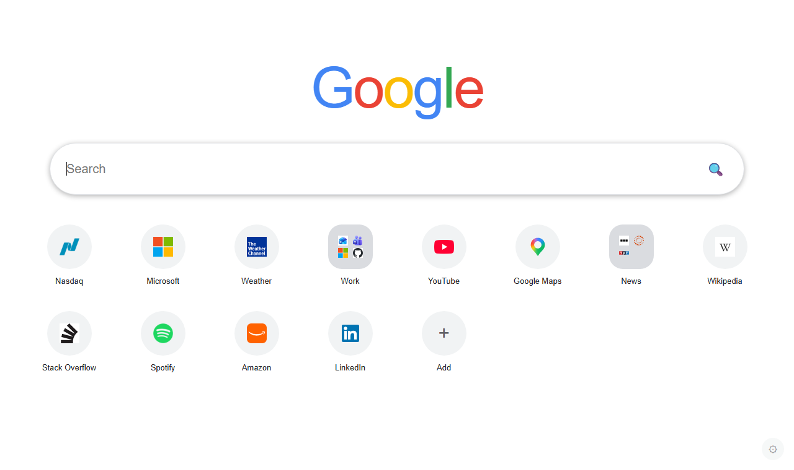
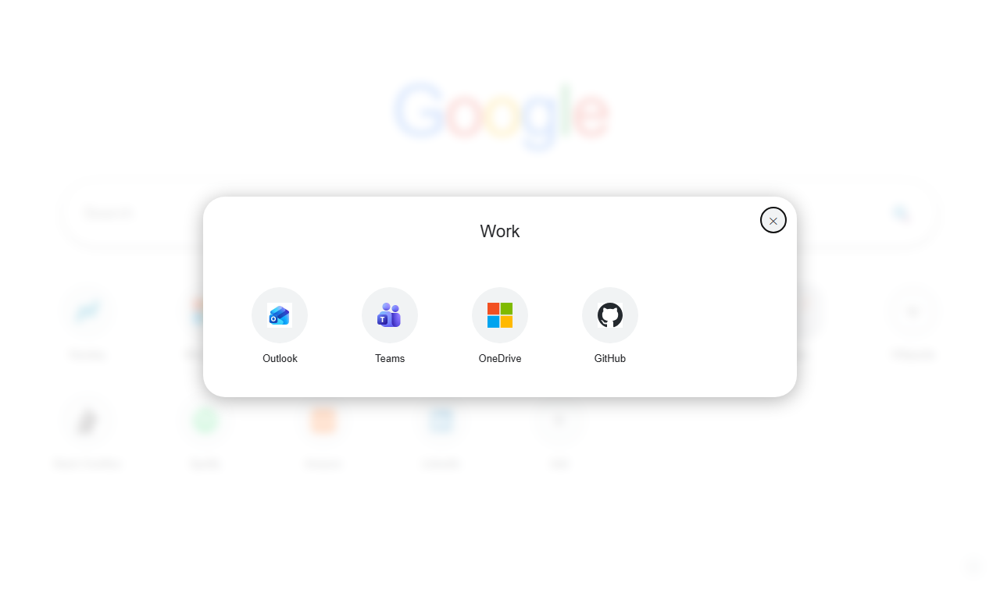

Your own new tab page
Google search on top, your favorite sites below it, in as many rows and folders as you like. Everything syncs through your own Google Drive, on your computer and on your phone.
Open the web version How to get it
Features
Favorites in multiple rows
No more single-row limit. Add as many favorites as you need and edit their names and addresses at any time.
Folders, like on an iPad
Drag one favorite onto another to create a folder. Drag more in, drag them out, rename or delete the folder. A folder with a single item left dissolves automatically.
Drag and drop ordering
Reorder favorites by dragging. Prefer the keyboard or a touch screen? Use the context menu to move items earlier or later.
Add the current page in one click
The Chrome extension adds a toolbar button that saves the page you are looking at to your favorites.
Synced through Google Drive
Favorites are saved in a hidden app folder in your own Google Drive. Nobody else, including the developer, can see them.
On your phone, too
Use the web version as your Chrome homepage on Android or iOS and see the same favorites. A QR code in the settings makes it easy.
Your language
Available in 33 languages. It follows your browser language by default and can be changed in the settings.
Light and dark mode
Follows your system theme automatically.
Your default search engine
The extension searches with the search engine you have chosen in Chrome. The web version uses Google.

Get started
On your computer (Chrome extension)
- Install the MyNewPage extension in Chrome. It is not on the Chrome Web Store yet; until then it can be loaded as an unpacked extension.
- Open a new tab. Use the "Sign in with Google" button to start syncing your favorites.
- Click the plus tile to add favorites, or press the MyNewPage button in the toolbar on any page you want to save.
- Right-click a favorite or a folder for more actions. Drag one favorite onto another to make a folder.
On your phone (web version)
- Open https://mynewpage.as.hu/myhome/index.html and sign in with Google.
- In Chrome on your phone, open Settings → Homepage, turn it on and enter the address above. The settings of the page (the gear icon) also show a QR code for this address.
Drag and drop between items works best with a mouse. On a touch screen, press and hold an item to open its menu.
Open source
Both the Chrome extension and the web version are open source. You can read the code, report issues or build your own copy on GitHub.
Privacy
Your favorites live in your own Google Drive and the developer has no access to them. There are no ads and no analytics. Read the full privacy policy.
Contact
Questions or feedback? E-mail: